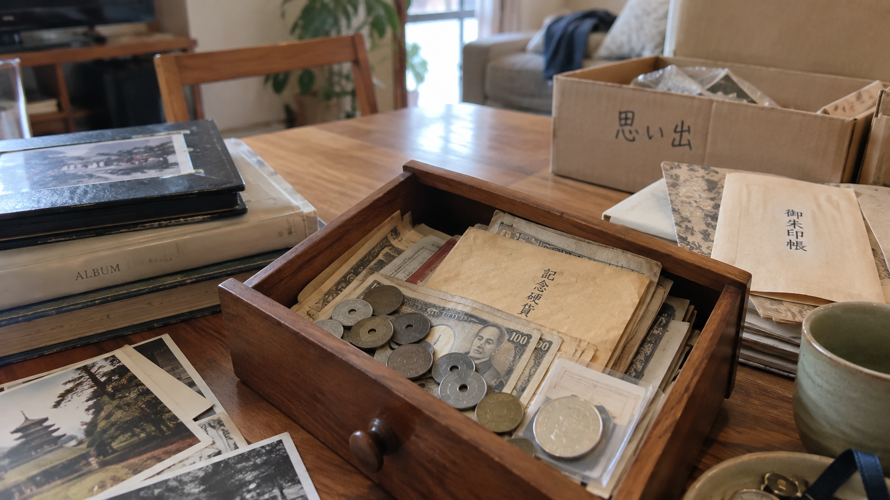

実家の片付けで、昔のお金が出てきたら。
遺品整理でも、生前整理でも。見慣れない硬貨や紙幣、記念硬貨が出てくると、 捨てていいのか、銀行なのか、専門家に相談すべきなのか迷うものです。 慌てて処分する前に、確認する順番を整理しました。
当サイトは、コインや古いお金の価値を鑑定・査定するサイトではありません。
何を確認し、次にどこへ相談すればよいかを整理するための情報サイトです。
何が出てきましたか？
-
古い日本の硬貨
見慣れない硬貨が出てきたとき、まず確認したいこと。
-
記念硬貨・記念コイン
使えるのか、収集価値があるのか、考え方を整理します。
-
古紙幣記事準備中
古いお札が出てきた場合の記事は、現在準備中です。
-
金貨・銀貨記事準備中
金色・銀色のコインに関する記事は、現在準備中です。
-
外国コイン記事準備中
外国のコインに関する記事は、現在準備中です。
-
コインコレクション記事準備中
まとまった数のコインについての記事は、現在準備中です。
-
実家の片付けで昔のお金が出てきたら
実家の片付けや遺品整理で古銭やコインが出てきたときの整理の考え方。
「何が出てきましたか？」で確認するページを探す
いくつかの質問に答えると、まず確認するとよいページの候補を表示します。 この機能は価格や価値を判定するものではありません。すべての処理はこのブラウザの中だけで行われ、 入力内容がサーバーに送信されることはありません。
意思決定の流れ
迷ったときは、次の流れで確認していくことをおすすめします。
- 1 まず確認する
- ↓
- 2 銀行で扱える？
- ↓
- 3 価値を調べる（記事準備中）
- ↓
- 4 保管する（記事準備中）
- ↓
- 5 専門家へ相談する
記事一覧
種類を確認する
次に何をするか考える